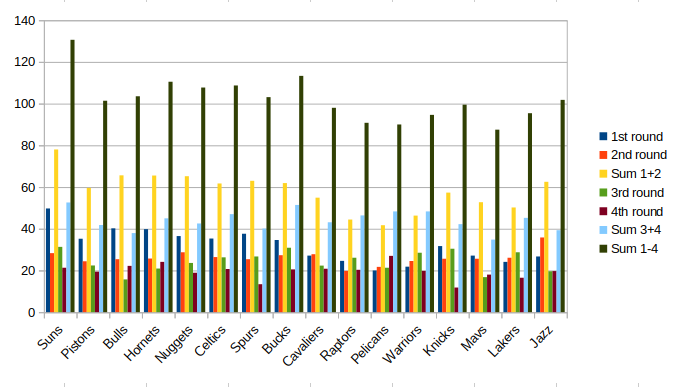

Ar tikrai draftuoti iš priekio buvo geriausia?
2024-12-27
Prabėgus Kaledoms, nutariau parašyti traktatą pavadinimu - o iš kurios
pozicijos geriausia buvo draftuoti šiemet. Žinoma,reik pripažinti, kad
į šią apžvalgą nebus įtrauktas traumų faktorius - Embiid, Barnes, Holmgrem,
Banchero ir kiti dėl traumų kentėję ir tebekenčiantys žaidėjai smarkiai
kiša pagalius savo komandoms į ratus. Visgi, bent vienas varžybas jau yra
sužaidę visi pirmų 4 drafto ratų žaidėjai, tad šiokias tokias išvadas
daryti jau galima. Taip pat apžvalgoje neitin atsižvelgiama į GM'ų
įžvalgumą arba žioplumą - labiau kreipsiu dėmesį į tandencingumą ir
pabandysiu atsakyti klausimą - o tai iš kurios pozicijos buvo geriausia
draftuoti šiemet? Ar tikrai draftuoti iš priekio yra daug geriau nei iš
galiorkos. Apžvelgsiu žaidėjus 3 pjūviais - pirmų dviejų ratų draftuotų
žaidėjų FPTS vidurkių sumą, o tai pat ir 3-4 ratų bei visų 1-4 ratų.
Nejamiau 5 ir žemesnių ratų žaidėjų - ten visgi reik pripažinti yra didelė
loterija ir keli "laimingi" pickai gali labai iškreipti tandencijas -
sakyčiau su žemesniais pickais labai svarbu tampa GM'ų įžvalgumas.

1-2ratai
Gana ryški ir akivaizdi tandencija, kad geriausia draftuoti iš priekio.
Nieko nestebina, kad Suns(78fpts) su Jokič priešakyje, ženkliai pirmauja
prieš antroje vietoje esančius Bulls (65.6). Įdomu, kad penkios didžiausią
vidurkį turinčios komandos draftavo iš pirmo septyneto. 6 vietoje yra
paskutiniai draftavą Jazz, kurios už pakarpos tempia Towns, o toliau dar
3 komandos draftavusios priekyje. 5 prasčiausią vidurkį turinčios draftavo
10-15 pozicijose. Įdomu, kad Suns pagal šią statistiką lenkia
paskutiniuosius Pelicanus (41.7) su Embiid "subinėje" beveik dvigubai.
3-4ratai
O čia jau tandencijas atrasti gerokai sunkiau. Geriausi vistiek yra Suns,
kuriuos pagal vidurkį smarkiai į priekį tempia traumuotas Banchero. O
toliau seka 8,12,11,6,10,15 draftų pozicijos. Penkios blogiausios komandos
- 2,7,16,3,14. Reik pripažint, kad jau pradedant 3 ratu prasideda nemažai
sėkmės ir GM įžvalgumai. Skirtumas tarp geriausių Suns (52.6) ir
blogiausios komandos Mavs (34.8) gerokai mažesnis, nei pirmuose dvejuose
raunduose.
1-4ratai
Vėlgi, kaip ir pirmų dviejų raundų apžvalgose, aiški tandencija, kad
draftavę iš pirmų pozicijų turėjo nemažą pranašumą. Draftavimas iš
pirmos pozicijos suteikia milžinišką pranašumą, bet ir kitos pirmos
pozicijos tiesiog yra lentelės priekyje. Geriausi pickų numeriai pasirodė
1,8,4,6,5. Iš lentelės priekio kiek iškrenta iš konteksto Pistons, kur nei
Luka Doncic nežaidžia pagal galimybes (o ir dėl traumų kenčia), bei Fox
stebuklų nerodo. Taip pat galima daryti išvadas, kad jei jau negauni pirmo picko, geriausia startuoti iš lentelės vidurio viršutinės dalies - 4-8 pickai.
Tarp draftinusių iš galo išsiskiria dvi komandos - Jazz bei
Knicks, kurios tikrai labai pagirtinai sudraftavo ir išsiskiria tarp savo draft
kaimynų.